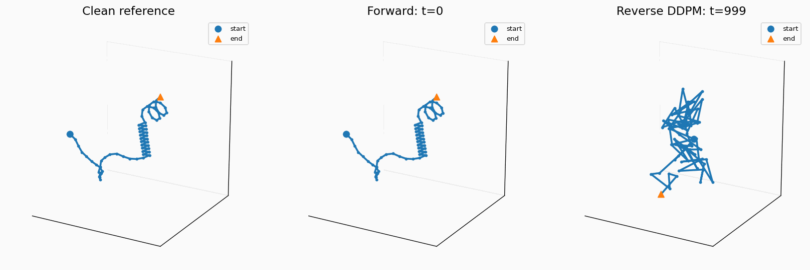
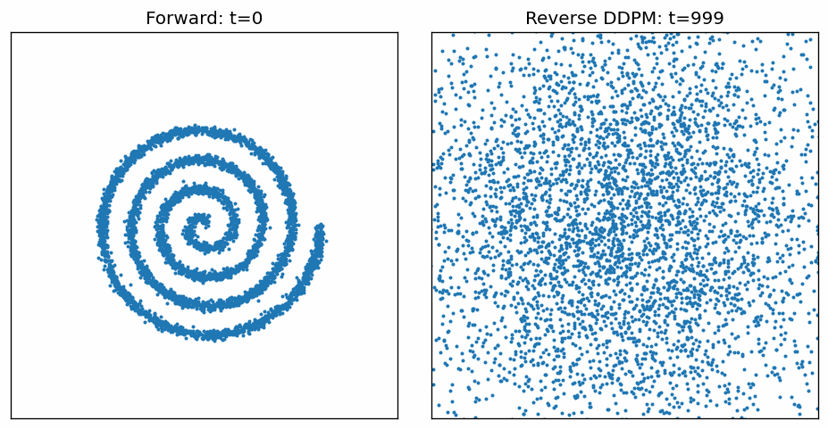

I am an MS Computer Science student on the ML track at Columbia University, graduating December 2026. I do research in Professor Mohammed AlQuraishi's computational biology lab, where I work with protein backbone diffusion models.
Previously, I spent two years as an ML Engineer at Avalara, where I built a conversational Taxability Research Assistant across 3M+ tax documents. I completed my B.E. in Computer Science from BITS Pilani.
I've recently been fascinated by diffusion models, flow matching and reinforcement learning and their application to problems in biology.

